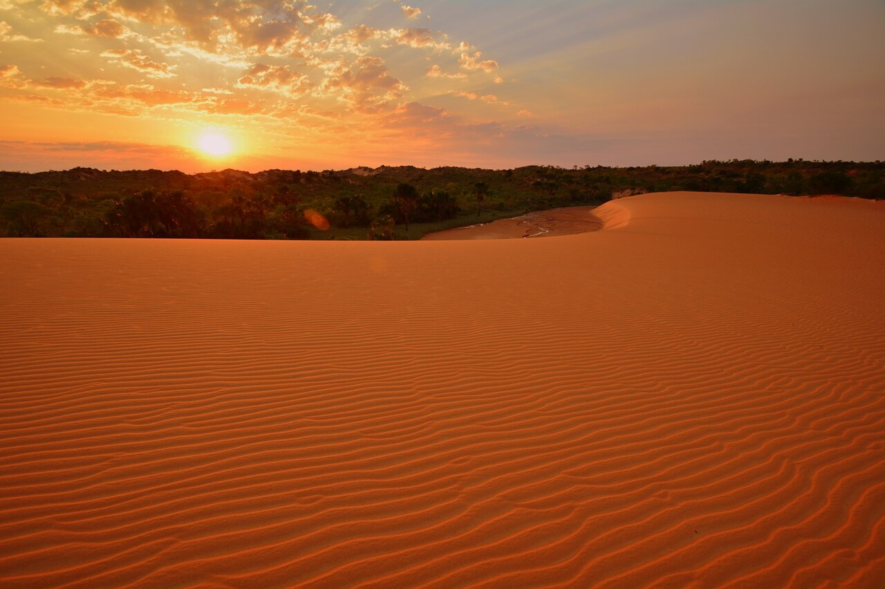
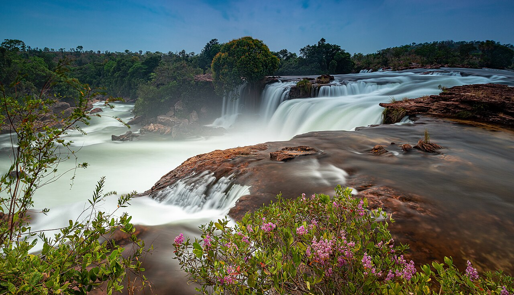

EXPEDIÇÃO PELO CERRADO
Jalapão
Dias de estrada, fervedouros, dunas e natureza preservada no coração do Cerrado.
VALOR DE REFERÊNCIAR$ 2.299 por pessoa
Conhecer esta experiência →A EXPERIÊNCIA
Aventura de verdade no coração do Cerrado.
Fervedouros onde você flutua, dunas alaranjadas, cachoeiras e rios: o Jalapão é uma imersão em paisagens remotas, guiada e feita sem pressa.
Roteiro sugerido
Ponte Alta e cânions; Cachoeira da Velha e Dunas; fervedouros e Cachoeira do Formiga; comunidade Mumbuca; retorno a Palmas.
O que está incluso
- Transporte 4x4 e logística da expedição
- Guia local e passeios definidos na proposta
- Entradas dos atrativos contratados
- Seguro aventura
O que não está incluso
- Aéreo, salvo quando indicado
- Hospedagem e refeições não previstas
- Despesas pessoais
A ordem dos passeios pode mudar por clima, estradas e vagas nos atrativos. Valor e disponibilidade são confirmados antes da reserva.
Quer viver o Jalapão?
Quero receber uma proposta →FOTOS DO DESTINO
O que espera por você


